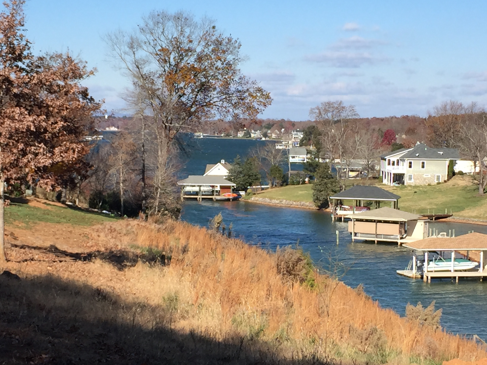

Come discover what Macon County offers. Enjoy an unsurpassed quality of life while building your business in the beautiful mountains of Western North Carolina.
Amenities such as high speed fiber connectivity, an excellent four-lane highway system, modern airport facilities and natural gas availability make Macon County the perfect location, enabling entrepreneurs, business and industry to truly compete in today’s global economy.
Discover our diversified economy – software development, advanced manufacturing, travel and tourism, retail, banking, health-care, the arts and more. Opportunity abounds in Macon County.
Macon County is truly in the “center of it all”, just a short distance from major markets such as Atlanta GA, Greenville SC, Knoxville TN, Chattanooga TN, Charlotte and Asheville, NC.
With four-lane connectivity to I-40, I-26 and I-85, we are easily accessible to all points in the Southeast, Midwest and along the Eastern Seaboard.
Macon County is the perfect fit for you and your business or industry.
Surveys
Emergency Services

Employment